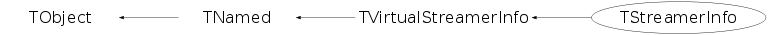

class TStreamerInfo: public TVirtualStreamerInfo
A TStreamerInfo object describes a persistent version of a class. A ROOT file contains the list of TStreamerInfo objects for all the class versions written to this file. When reading a file, all the TStreamerInfo objects are read back in memory and registered to the TClass list of TStreamerInfo. One can see the list and contents of the TStreamerInfo on a file with, eg, TFile f("myfile.root"); f.ShowStreamerInfo(); A TStreamerInfo is a list of TStreamerElement objects (one per data member or base class). When streaming an object, the system (TClass) loops on all the TStreamerElement objects and calls teh appropriate function for each element type.
Function Members (Methods)
public:
protected:
| virtual void | TObject::DoError(int level, const char* location, const char* fmt, va_list va) const |
| void | TObject::MakeZombie() |
private:
| TStreamerInfo(const TStreamerInfo&) | |
| void | AddReadAction(Int_t index, TStreamerElement* element) |
| void | AddWriteAction(Int_t index, TStreamerElement* element) |
| void | DestructorImpl(void* p, Bool_t dtorOnly) |
| void | GenerateDeclaration(FILE* fp, FILE* sfp, const TList* subClasses, Bool_t top = kTRUE) |
| UInt_t | GenerateIncludes(FILE* fp, char* inclist, const TList* extrainfos) |
| static Double_t | GetValueAux(Int_t type, void* ladd, int k, Int_t len) |
| void | InsertArtificialElements(const TObjArray* rules) |
| TStreamerInfo& | operator=(const TStreamerInfo&) |
| static void | PrintValueAux(char* ladd, Int_t atype, TStreamerElement* aElement, Int_t aleng, Int_t* count) |
Data Members
public:
| enum { | kCannotOptimize | |
| kIgnoreTObjectStreamer | ||
| kRecovered | ||
| kNeedCheck | ||
| kIsCompiled | ||
| }; | ||
| enum EReadWrite { | kBase | |
| kOffsetL | ||
| kOffsetP | ||
| kCounter | ||
| kCharStar | ||
| kChar | ||
| kShort | ||
| kInt | ||
| kLong | ||
| kFloat | ||
| kDouble | ||
| kDouble32 | ||
| kLegacyChar | ||
| kUChar | ||
| kUShort | ||
| kUInt | ||
| kULong | ||
| kBits | ||
| kLong64 | ||
| kULong64 | ||
| kBool | ||
| kFloat16 | ||
| kObject | ||
| kAny | ||
| kObjectp | ||
| kObjectP | ||
| kTString | ||
| kTObject | ||
| kTNamed | ||
| kAnyp | ||
| kAnyP | ||
| kAnyPnoVT | ||
| kSTLp | ||
| kSkip | ||
| kSkipL | ||
| kSkipP | ||
| kConv | ||
| kConvL | ||
| kConvP | ||
| kSTL | ||
| kSTLstring | ||
| kStreamer | ||
| kStreamLoop | ||
| kCache | ||
| kArtificial | ||
| kCacheNew | ||
| kCacheDelete | ||
| kMissing | ||
| }; | ||
| enum TVirtualStreamerInfo::[unnamed] { | kCannotOptimize | |
| kIgnoreTObjectStreamer | ||
| kRecovered | ||
| kNeedCheck | ||
| kIsCompiled | ||
| }; | ||
| enum TVirtualStreamerInfo::EReadWrite { | kBase | |
| kOffsetL | ||
| kOffsetP | ||
| kCounter | ||
| kCharStar | ||
| kChar | ||
| kShort | ||
| kInt | ||
| kLong | ||
| kFloat | ||
| kDouble | ||
| kDouble32 | ||
| kUChar | ||
| kUShort | ||
| kUInt | ||
| kULong | ||
| kBits | ||
| kLong64 | ||
| kULong64 | ||
| kBool | ||
| kFloat16 | ||
| kObject | ||
| kAny | ||
| kObjectp | ||
| kObjectP | ||
| kTString | ||
| kTObject | ||
| kTNamed | ||
| kAnyp | ||
| kAnyP | ||
| kAnyPnoVT | ||
| kSTLp | ||
| kSkip | ||
| kSkipL | ||
| kSkipP | ||
| kConv | ||
| kConvL | ||
| kConvP | ||
| kSTL | ||
| kSTLstring | ||
| kStreamer | ||
| kStreamLoop | ||
| kCache | ||
| kArtificial | ||
| kCacheNew | ||
| kCacheDelete | ||
| kMissing | ||
| }; | ||
| enum TObject::EStatusBits { | kCanDelete | |
| kMustCleanup | ||
| kObjInCanvas | ||
| kIsReferenced | ||
| kHasUUID | ||
| kCannotPick | ||
| kNoContextMenu | ||
| kInvalidObject | ||
| }; | ||
| enum TObject::[unnamed] { | kIsOnHeap | |
| kNotDeleted | ||
| kZombie | ||
| kBitMask | ||
| kSingleKey | ||
| kOverwrite | ||
| kWriteDelete | ||
| }; |
protected:
| Bool_t | TVirtualStreamerInfo::fIsBuilt | ! true if the StreamerInfo has been 'built' |
| TString | TNamed::fName | object identifier |
| Bool_t | TVirtualStreamerInfo::fOptimized | ! true if the Streamer has been optimized |
| TString | TNamed::fTitle | object title |
| static Bool_t | TVirtualStreamerInfo::fgCanDelete | True if ReadBuffer can delete object |
| static TVirtualStreamerInfo* | TVirtualStreamerInfo::fgInfoFactory | |
| static Bool_t | TVirtualStreamerInfo::fgOptimize | True if optimization on |
| static Bool_t | TVirtualStreamerInfo::fgStreamMemberWise | True if the collections are to be stream "member-wise" (when possible). |
private:
| UInt_t | fCheckSum | checksum of original class |
| TClass* | fClass | !pointer to class |
| Int_t | fClassVersion | Class version identifier |
| TStreamerInfo::TCompInfo* | fComp | ![fNdata] additional info |
| ULong_t* | fElem | ![fNdata] |
| TObjArray* | fElements | Array of TStreamerElements |
| Int_t* | fLength | ![fNdata] |
| ULong_t | fLiveCount | ! Number of outstanding pointer to this StreamerInfo. |
| ULong_t* | fMethod | ![fNdata] |
| Int_t | fNVirtualInfoLoc | ! Number of virtual info location to update. |
| Int_t | fNdata | !number of optmized types |
| Int_t* | fNewType | ![fNdata] |
| Int_t | fNumber | !Unique identifier |
| Int_t* | fOffset | ![fNdata] |
| Version_t | fOldVersion | ! Version of the TStreamerInfo object read from the file |
| Int_t | fOnFileClassVersion | !Class version identifier as stored on file. |
| TStreamerInfoActions::TActionSequence* | fReadMemberWise | ! List of read action resulting from the compilation for use in member wise streaming. |
| TStreamerInfoActions::TActionSequence* | fReadObjectWise | ! List of read action resulting from the compilation. |
| Int_t | fSize | !size of the persistent class |
| Int_t* | fType | ![fNdata] |
| ULong_t* | fVirtualInfoLoc | ![fNVirtualInfoLoc] Location of the pointer to the TStreamerInfo inside the object (when emulated) |
| TStreamerInfoActions::TActionSequence* | fWriteMemberWise | ! List of write action resulting from the compilation for use in member wise streaming. |
| TStreamerInfoActions::TActionSequence* | fWriteObjectWise | ! List of write action resulting from the compilation. |
| static Int_t | fgCount | Number of TStreamerInfo instances |
| static TStreamerElement* | fgElement | Pointer to current TStreamerElement |
Class Charts
{kind=link}
{kind=link}
{kind=link}
{kind=link}

Function documentation
void Build()
Build the I/O data structure for the current class version. A list of TStreamerElement derived classes is built by scanning one by one the list of data members of the analyzed class.
void BuildCheck()
Check if built and consistent with the class dictionary. This method is called by TFile::ReadStreamerInfo.
Bool_t BuildFor(const TClass* cl)
Check if we can build this for foreign class - do we have some rules to do that
void CallShowMembers(void* obj, TMemberInspector& insp) const
Emulated a call ShowMembers() on the obj of this class type, passing insp and parent.
TObject * Clone(const char* newname = "") const
Make a clone of an object using the Streamer facility. If newname is specified, this will be the name of the new object.
Bool_t CompareContent(TClass* cl, TVirtualStreamerInfo* info, Bool_t warn, Bool_t complete)
Return True if the current StreamerInfo in cl or info is equivalent to this TStreamerInfo. 'Equivalent' means the same number of persistent data member which the same actual C++ type and the same name. if 'warn' is true, Warning message are printed to explicit the differences. if 'complete' is false, stop at the first error, otherwise continue until all members have been checked.
void ForceWriteInfo(TFile* file, Bool_t force = kFALSE)
-- Recursively mark streamer infos for writing to a file. Will force this TStreamerInfo to the file and also all the dependencies. If argument force > 0 the loop on class dependencies is forced. This function is called when streaming a class that contains a null pointer. In this case, the TStreamerInfo for the class with the null pointer must be written to the file and also all the TStreamerInfo of all the classes referenced by the class. -- We must be given a file to write to.
TClass * GetActualClass(const void* obj) const
Assuming that obj points to (the part of) an object that is of the type described by this streamerInfo, return the actual type of the object (i.e. the type described by this streamerInfo is a base class of the actual type of the object. This routine should only be called if the class decribed by this StreamerInfo is 'emulated'.
UInt_t GetCheckSum(UInt_t code) const
Recalculate the checksum of this TStreamerInfo based on its code. The class ckecksum is used by the automatic schema evolution algorithm to uniquely identify a class version. The check sum is built from the names/types of base classes and data members. Algorithm from Victor Perevovchikov (perev@bnl.gov). if code==1 data members of type enum are not counted in the checksum if code==2 return the checksum of data members and base classes, not including the ranges and array size found in comments. This is needed for backward compatibility. WARNING: this function must be kept in sync with TClass::GetCheckSum. They are both used to handle backward compatibility and should both return the same values. TStreamerInfo uses the information in TStreamerElement while TClass uses the information from TClass::GetListOfBases and TClass::GetListOfDataMembers.
void GenerateDeclaration(FILE* fp, FILE* sfp, const TList* subClasses, Bool_t top = kTRUE)
Write the Declaration of class.
UInt_t GenerateIncludes(FILE* fp, char* inclist, const TList* extrainfos)
Add to the header file, the #include need for this class
Int_t GenerateHeaderFile(const char* dirname, const TList* subClasses = 0, const TList* extrainfos = 0)
Generate header file for the class described by this TStreamerInfo the function is called by TFile::MakeProject for each class in the file
TStreamerElement * GetCurrentElement()
static function returning a pointer to the current TStreamerElement fgElement points to the current TStreamerElement being read in ReadBuffer
Int_t GetDataMemberOffset(TDataMember* dm, TMemberStreamer*& streamer) const
Compute data member offset return pointer to the Streamer function if one exists
Int_t GetOffset(const char* ) const
return the offset of the data member as indicated by this StreamerInfo
Int_t GetSizeElements() const
return total size of all persistent elements of the class use GetSize if you want to get the real size in memory
TStreamerElement* GetStreamerElement(const char* datamember, Int_t& offset) const
Return the StreamerElement of "datamember" inside our
class or any of its base classes. The offset information
contained in the StreamerElement is related to its immediately
containing class, so we return in 'offset' the offset inside
our class.
TStreamerElement* GetStreamerElementReal(Int_t i, Int_t j) const
TStreamerInfo holds two types of data structures -TObjArray* fElements; containing the list of all TStreamerElement objects for this class version. -ULong_t* fElem; containing the preprocessed information by TStreamerInfo::Compile In case consecutive data members are of the same type, the Compile function declares the consecutive elements as one single element in fElems. example with the class TAttLine TClass::GetClass("TAttLine")->GetStreamerInfo()->ls(); produces; StreamerInfo for class: TAttLine, version=1 short fLineColor offset= 4 type= 2 line color short fLineStyle offset= 6 type= 2 line style short fLineWidth offset= 8 type= 2 line width i= 0, fLineColor type= 22, offset= 4, len=3, method=0 For I/O implementations (eg. XML) , one has to know the original name of the data member. This function can be used to return a pointer to the original TStreamerElement object corresponding to the j-th element of a compressed array in fElems. parameters description: - i: the serial number in array fElem - j: the element number in the array of consecutive types In the above example the class TAttLine has 3 consecutive data members of the same type "short". Compile makes one single array of 3 elements. To access the TStreamerElement for the second element of this array, one can call: TStreamerElement *el = GetStreamerElementReal(0,1); const char* membername = el->GetName(); This function is typically called from Tbuffer, TXmlBuffer
Double_t GetValueAux(Int_t type, void* ladd, int k, Int_t len)
Get the value from inside a collection.
Double_t GetValue(char* pointer, Int_t i, Int_t j, Int_t len) const
return value of element i in object at pointer.
The function may be called in two ways:
-method1 len < 0
i is assumed to be the TStreamerElement number i in StreamerInfo
-method2 len >= 0
i is the type
address of variable is directly pointer.
Double_t GetValueClones(TClonesArray* clones, Int_t i, Int_t j, Int_t k, Int_t eoffset) const
return value of element i in object number j in a TClonesArray and eventually element k in a sub-array.
Double_t GetValueSTL(TVirtualCollectionProxy* cont, Int_t i, Int_t j, Int_t k, Int_t eoffset) const
return value of element i in object number j in a TClonesArray and eventually element k in a sub-array.
Double_t GetValueSTLP(TVirtualCollectionProxy* cont, Int_t i, Int_t j, Int_t k, Int_t eoffset) const
return value of element i in object number j in a TClonesArray and eventually element k in a sub-array.
void InsertArtificialElements(const TObjArray* rules)
Insert new members as expressed in the array of TSchemaRule(s).
void* New(void* obj = 0)
An emulated object is created at address obj, if obj is null we allocate memory for the object.
void* NewArray(Long_t nElements, void* ary = 0)
An array of emulated objects is created at address ary, if ary is null, we allocate memory for the array.
void DestructorImpl(void* p, Bool_t dtorOnly)
Internal part of the destructor. Destruct each of the datamembers in the same order as the implicit destructor would.
void Destructor(void* p, Bool_t dtorOnly = kFALSE)
Emulated destructor for this class. An emulated object is destroyed at address p. Destruct each of the datamembers in the same order as the implicit destructor would.
void DeleteArray(void* p, Bool_t dtorOnly = kFALSE)
Destroy an array of emulated objects, with optional delete.
void PrintValue(const char* name, char* pointer, Int_t i, Int_t len, Int_t lenmax = 1000) const
print value of element i in object at pointer
The function may be called in two ways:
-method1 len < 0
i is assumed to be the TStreamerElement number i in StreamerInfo
-method2 len >= 0
i is the type
address of variable is directly pointer.
len is the number of elements to be printed starting at pointer.
void PrintValueClones(const char* name, TClonesArray* clones, Int_t i, Int_t eoffset, Int_t lenmax = 1000) const
print value of element i in a TClonesArray
void PrintValueSTL(const char* name, TVirtualCollectionProxy* cont, Int_t i, Int_t eoffset, Int_t lenmax = 1000) const
print value of element i in a TClonesArray
void TagFile(TFile* fFile)
Mark the classindex of the current file as using this TStreamerInfo This function is deprecated and its functionality is now done by the overloads of TBuffer::TagStreamerInfo.
void PrintValueAux(char* ladd, Int_t atype, TStreamerElement* aElement, Int_t aleng, Int_t* count)
print value of element in object at pointer, type atype, leng aleng or *count
The function may be called in two ways:
-method1 len < 0
i is assumed to be the TStreamerElement number i in StreamerInfo
-method2 len >= 0
i is the type
address of variable is directly pointer.
len is the number of elements to be printed starting at pointer.
void Update(const TClass* oldClass, TClass* newClass)
function called by the TClass constructor when replacing an emulated class by the real class
GenEmulatedProxy(const char* class_name, Bool_t silent)
Generate emulated collection proxy for a given class.
GenEmulatedClassStreamer(const char* class_name, Bool_t silent)
Generate emulated class streamer for a given collection class.
GenExplicitProxy(const ROOT::TCollectionProxyInfo& info, TClass* cl)
Generate proxy from static functions.
GenExplicitClassStreamer(const ROOT::TCollectionProxyInfo& info, TClass* cl)
Generate class streamer from static functions.
TCompInfo& operator=(const TStreamerInfo& )
TStreamerInfo(const TStreamerInfo& )
void AddReadAction(Int_t index, TStreamerElement* element)
void AddWriteAction(Int_t index, TStreamerElement* element)
void Compile()
TStreamerInfoActions::TActionSequence * GetReadMemberWiseActions(Bool_t forCollection)
{ return forCollection ? fReadMemberWise : fReadObjectWise; }TStreamerInfoActions::TActionSequence * GetWriteMemberWiseActions(Bool_t forCollection)
{ return forCollection ? fWriteMemberWise : fWriteObjectWise; }Int_t ReadBufferClones(TBuffer& b, TClonesArray* clones, Int_t nc, Int_t first, Int_t eoffset)
Int_t ReadBufferSTL(TBuffer& b, TVirtualCollectionProxy* cont, Int_t nc, Int_t first, Int_t eoffset)
Int_t WriteBuffer(TBuffer& b, char* pointer, Int_t first)
Int_t WriteBufferClones(TBuffer& b, TClonesArray* clones, Int_t nc, Int_t first, Int_t eoffset)
Int_t WriteBufferSTL(TBuffer& b, TVirtualCollectionProxy* cont, Int_t nc, Int_t first, Int_t eoffset)
Int_t WriteBufferSTLPtrs(TBuffer& b, TVirtualCollectionProxy* cont, Int_t nc, Int_t first, Int_t eoffset)